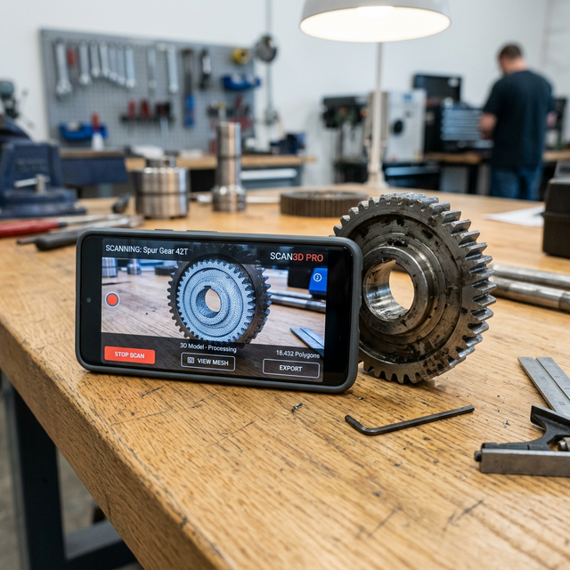
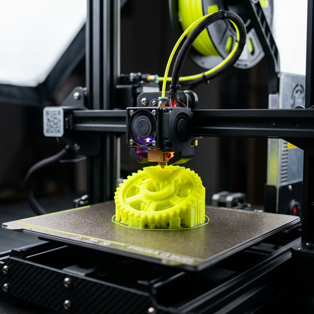

Transform everyday smartphone photos into production-ready, precision STEP files in minutes. Powered by state-of-the-art vision models.

Place your part next to a ruler for scale. Snap a few photos from different angles using the ScanStep AI iOS app and add a brief description of the material and requirements.
Our cloud pipeline analyzes your photos using Gemini Vision and generates a flawless, editable B-Rep CAD model (STEP format) via Zoo.dev's modeling engine.

Export your STEP file directly to Fusion 360, SolidWorks, or throw it straight into your slicer. Go from broken part to a 3D printed replacement on the same day.